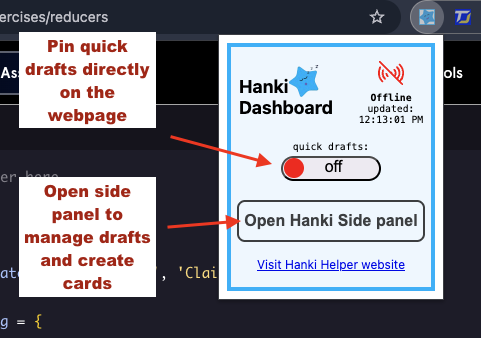
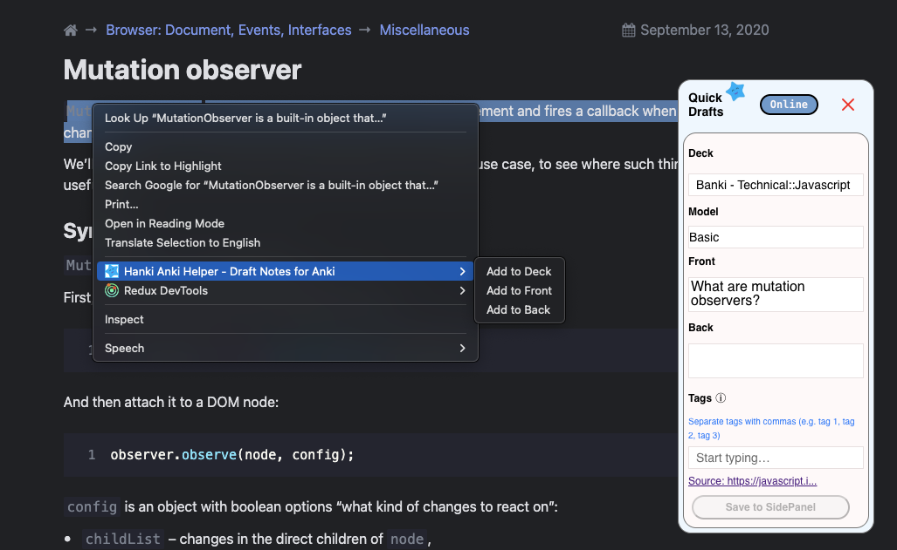
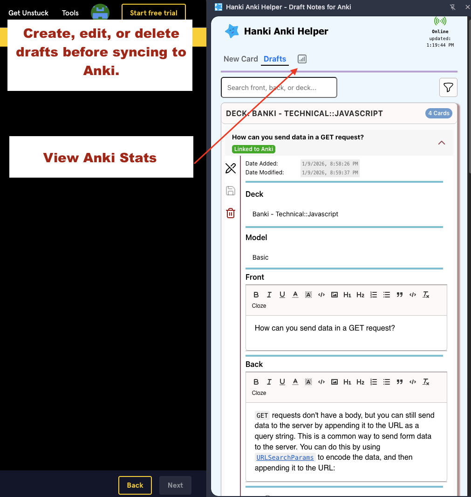

How To Use
-
AnkiConnect & AnkiWeb installation
Anki is a flashcard program that uses spaced repetition for more efficient studying. Visit their website to learn more.
Learn more about AnkiWebHanki Helper uses AnkiConnect to sync your drafts into Anki - AnkiConnect runs locally on your computer. Cards are only sent when you click Sync
- 1. Open Anki
- 2. Go to Tools → Add-ons → Get Add-ons
- 3. Enter the code: 2055492159
- 4. Restart Anki
-
Popup view

- - Toggle Quick Drafts on or off using the slider
- - Open the Side Panel
- - Click online/offline icon to check Anki connection
-
Quick draft View

- 1. highlight text and right click.
- 2. copy text to deck, front or back
- 3. Save to SidePanel once card is completely filled out
Side Panel View

Use the side panel to create cards without leaving the browser. Edit and refine drafts before syncing to Anki. Review Anki stats and streaks